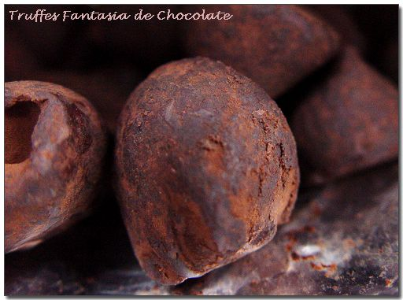
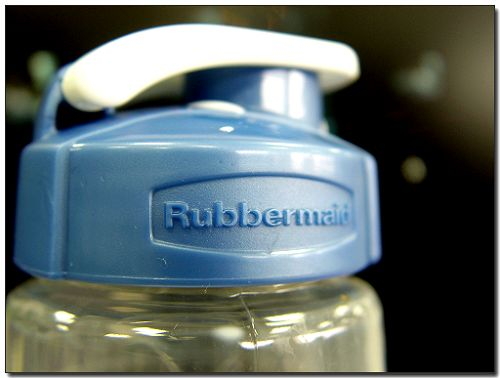

Archives : 2007-03
黄色*玉兰花 @ Mar 27, 2007
如果我对玉兰树的认识是正确的，这就应该是玉兰花吧？
难得见到黄色的玉兰花，第二天中午带了相机拍下它。
南京的天空没有这么澈蓝，自动白平衡之后也可以让人“蓝”得动心。
谈到植物，今早晨广播节目里介绍转基因大豆，现在要给南京的法国梧桐树做转基因实验，直白地讲就是要它不孕，不会结出果实，没有果实每年春天就不会飘小小的降落伞了，这种降落伞上的毛毛非常惹人厌，钻到鼻子里，或迷了眼睛，尤其对鼻炎及过敏性的人危害很大。动物绝育展延到为植物绝育，真绝。人类什么事情干不出来？


糖果般的耳环 @ Mar 27, 2007
饰品中尤其喜欢耳环。
第一次戴这副耳环很乡土气，衣服与耳环不和谐。
昨天穿了淡紫色竖条纹衬衣+黑色夹克式皮衣+咖啡色灯心绒短裙；
今天是淡紫色大领口体恤+淡紫色条纹围巾+黑色夹克式皮衣+牛仔裤。
很享受由糖果般的它带来的搭配：）
很多饰品的美有了搭配才突显出精彩。

线路选择 @ Mar 27, 2007
这段时间住在湖南路，每天上班选择路线成了重要的问题。
从湖南路到江宁，究竟哪条路最省时间呢？
选择一：玄武湖隧道-九华山隧道-龙蟠中路-城东干道.....几乎每次都需要40~50分钟，还必须见缝插针的抢路走。昨天居然在香格里拉十字路口等了6、7个90秒的红灯，20分钟过去了，汽油消耗了多少？
选择二：模范马路-城西干道-高架-江宁，将近25分钟，一路虽然车多，只要不出现塞车情况，道路一般是畅通的，并且高架上没有红绿灯。
常规思维下我们总会选择最短的路线到达目的地，尤其没有驾驶经验的人会认为这样既省油又省时。可是交通状况糟糕的话，这条线路就会变成既不省油又不省时的路线。我更倾向走交通状况好的路线，即使距离比其它线路长，事实上匀速行驶比走走停停未必消耗更多汽油咯。不信，可以测试一下。
不得不承认这段驾驶体会让我有点厌恶开车了。
碎语 @ Mar 23, 2007
**为什么有的女人话总是很多？一件小破事能描述1000个句子出来。有她在就不会有冷场的时候。这种能力从年轻的时候就具备了，看来和岁月没什么关系。
**婚姻让一个人上了天堂，另一个人下了地狱？
《寻找克里斯蒂娜》*睡眠 @ Mar 23, 2007
昨晚收到一个短信：电视上有人在找你，快看央六台。
新手机摔坏了，暂用旧手机，不知道是谁的号码，当真了打过去问，原来是大哥，对方开心地说：“央六台正在播的电影名叫《寻找克里斯蒂娜》，农村题材，讲的东北话，讲述进山寻找一只猴子的故事...”晕倒~~
这一夜睡的很不塌实，漂浮在睡眠之上，象水面的浮萍一般荡荡悠悠，浮浮沉沉。梦见一个隆胸的女人穿着劳拉在《古墓丽影》里的戏服，撑着胳膊躺在地上，懒散的神情。她的乳房在赋有弹性的衣服下凸显的强烈，被高高挤出紧绷的背心轮廓。不知我还梦见什么，意识始终没能和睡眠融合起来，身体在黑夜沉睡，意识在白天清醒，就这么过了一夜。六点多钟醒来，眼睛无论如何都睁不开...
TRUFFES*Chocolate @ Mar 22, 2007

中午买了四本杂志，厚厚的捧在手上很沉。忙起来才知道品着茶吃着巧克力的闲散及慢悠悠心境下的阅读是多么奢侈的享受。一天最高温度在19度左右，春天悄悄地来临啦！
thE gaMe @ Mar 20, 2007
一路赶到公司，所有办公室的门都关着。第一反映是开会？第二反映自己没有得到休息的通知？脑海里跃入迈克尔.道格拉斯主演的电影《The Game》的场景，片中在他48岁生日这天收到弟弟送来的一份礼物，即参与一种神秘游戏的证书。这项被称做CRS的游戏一步步地把主人公原本平静的生活捣了个粉碎。第三反映看错时间。问做卫生的阿姨：“人都去哪儿了？”“还没到上班时间呢...”阿姨答道。
上帝啊，我居然在早晨7点半起床，十分钟解决洗漱，15分钟赶到公司，空旷的车库，禁闭的办公室房门，空无一人的走廊。整整比上班时间早到一小时！邪门的是路上看了手表，但只看了分针没看时针。在毫不知情的情况下，面对错位的时间和场景，试想一下那种感受....反映过来时好象刚从游戏中出来。
生活原来是按照约定俗成的规则在行进，我们的时间概念、生活习惯、道德约束、白天黑夜、善恶美丑、小学中学大学上班结婚生子.....一系列标准和无形约束，“规范”着我们看似有序的人生！何尝不是一种游戏规则呢？只是做这个游戏遵守这种规则的人更多，有人玩得得心应手，有人不擅长，有人玩得苦闷。恰好刚看过《Eragon》，真正能够反常规、天马行空的人需要的是“一分勇气，三分傻气”！（来自龙骑士伊拉贡的经典对白）
《The Game》里的对白：
**Conrad: They fuck you and fuck you and fuck you, and just when you think it's over, that's when the real fucking begins!
Jim Feingold: The game is tailored specifically to each participant. Think of it as a great vacation, except you don't go to it, it comes to you.
Conrad: What do you get for the man who has... everything?**
辣螺蛳 @ Mar 16, 2007
妈妈烧了上市不久的螺蛳，非要让我午饭带到公司尝尝，在办公室里吃这个有点夸张，好在中午只有我一个人在办公室，少些尴尬。
现在小龙虾也上市了，比去年晚了半个月，市场上每天可供应5、600百斤的量，大点儿的40多元一斤，小的十几元一斤。以前有个同事的先生很喜欢吃这个，每次买回家都很认真的每个刷干净，让太太烧给他吃。电视上介绍南京澳洲龙虾有望在两三年后价格卖的和当地小龙虾一样的价位，事实上那不是真正的澳洲龙虾，而是澳洲龙虾和小龙虾杂交的“南京澳龙”，青色外壳，个头比小龙虾稍微大一点。但据说杂交的东西不会好吃。南京人吃龙虾有股疯狂劲儿，旺季时据说南京每天可以吃掉10万斤龙虾，哇~~
为了自己喜欢吃的东西愿意付出劳动也是好同志。可我对活的东西总是下不了手，尤其恐怖的是黄鳝，已经被开膛破肚切成片了，清洗时神经仍然在动...我的汗毛会竖起来，这样的情形也无法下手继续的。最矛盾之处在于我偏好吃荤菜，市场上买回来的肉食最好能切好块，鸡头鸭头什么最好不要出现，那惊恐的眼睛也是我无法忍受的情形。

来自洪晃《受刺激以后的采访》 @ Mar 14, 2007
昨天看了洪晃写的一篇文章，觉得有点意思，连接一下“我在巴黎时装周多少受了点刺激，头一次非常清楚地认识到我们真的没有自己的时尚工业，至少差远了．就在我揪自己头发的时候，新浪发了我一个问题表，关于＂女魔头＂，所以就发泄了一下。 ”
我们需要距离 @ Mar 12, 2007
我不知道别人怎么看待这个问题，我认为人与人之间需要保持距离。
亲人知已爱人除外。
我发现有些人和对方一说话就巴着人家肩膀，或者近到让人不舒服的距离；也有人只见了几次面，便开始熟络得随便开玩笑，生硬的亲昵，让人惊诧之下生出许多烦感；有些人特别渴望了解你的奖金、家庭存款、每月开支...最好具体到两位小数；更有人每每遇见，上下打量，接着开始询问你身上的可以问的价格、购买地点、购买时间；有的特热衷于别人的私事，你和谁恋爱，和谁结婚，什么时候要孩子无不是他们打探的目标，甚至要成为你的代言人。
在彼此未接受走近的阶段，保持适当的距离是礼节，也是礼貌。
为什么很多人不明白这一点呢？
在我学会说粗话的2004年，常有好事人喜于对我说：“你如何如何，人家如何如何...”从那时开始一直到现在，我也喜于回答他们一句：“关我鸟事。”然后很乐意看到他们脸上措噩的表情。
无题 @ Mar 10, 2007
长辈的世交请了我们一家人去吃晚饭，她家的儿媳妇正要上任我们公司所在区的区长，很年轻的女士，儿子又是某局处长。饭局尾声有个男人进到包间里敬了一圈酒，典型的场面寒暄与规范笑容，想来做官一定很累。福气就那么多，这里有了别处自然会少一些，所谓这世上无完美之人，无完美之事。公司这么多年的年会上我只抽到过一次四等奖，我相信这里没有运气，一定是在某处享用了。
家庭活动有时能让我意识到现实生活，这话乍听起来是废话。我想表达的譬如你活着但不会感觉到“活着”，只有受到病痛折磨或处于生命边缘的时候才会意识到“活着”的状态，这样是不是理解我所说的？每天一个人去上班，到了办公室坐在深邃的隔段里工作，晚上下班回家，日复一日的内容似乎有些真空，这是较平静的真空。一旦参加家庭活动，每个小家庭就好象成列品似的铺开在众人面前，彼此谈论，相互观察，这时候会意识到现实的状态。

HGW XX/7 @ Mar 09, 2007
昨晚看完这部德国片《窃听风暴》(The Lives of Others)（或《别样人生》、《别人的生活》），那种不平静缘自很久未曾有过的看片瘾，真正是满足了对人性与心理细致描述的偏爱欲望。
时间是1984年，地点是在东德柏林，每一次的开头字幕出现的是“公开化无处不在”。全东德百姓被一百万史塔西秘密警察控制着，还有两百万名告密者，他们的目地就是要知道别人生活的任何一个细枝末节。

秘密警察Gerd Wiesler上尉(乌尔里希·穆埃饰演)，他那身陷的眼窝突显着炯炯有神的眼睛，冷漠的表情观察着周围的一切。饰演这个警察的演员选的好， 特工的面孔、发型，淳朴的体态，影片到最后你会觉得这个警察体态表现出的可爱和善良。最打动我的有几场戏：
1、窃听过程中他逐渐被乔治·德莱曼Georg Dreyman(塞巴斯蒂安·考奇饰演)和克里斯塔-玛丽娅·西兰德Christa-Maria Sieland(马蒂娜·戈黛特饰演)夫妻两的生活所打动，偷走德莱曼的诗集，躺在温暖的光线下，持着那张豪无表情的面孔阅读的镜头使得我眼眶温润起来；
2、Gerd Wiesler召妓与艺术家夫妇的生活形成强烈对比，难道秘密警察不是受到美好而人性的东西驱使向往亲密无间向往家庭生活，渴望一个女人的陪伴吗？这幕戏也是为了表现冷酷制度下丝毫摧毁不了人性中最柔软的部分；
3、克里斯塔-玛丽娅·西兰德为了保护自己的爱人，保住自由和艺术生涯不得不接受艺术部长的性骚扰，在艺术家夫妇为此痛苦矛盾，妻子克里斯塔-玛丽娅百般进行思想斗争的时候，秘密警察Gerd Wiesler以一个普通观众的身份出现在她面前，给她心理上的支持和劝导，使得这个女演员有勇气拒绝部长的无理要求回到丈夫身边；
4、秘密警察Gerd Wiesler的代号为HGW XX/7，柏林墙拆掉后，他成了一个默默无闻的邮差，有一天他在书店看到乔治·德莱曼新出版的书籍，打开封页上面写着HGW XX/7....默契和感激等等一系列复杂的心情都在那一刻迸发出来，很难察觉到Gerd Wiesler表情的变化，但却是以他那双深邃清透的眼睛为剧终镜头......
这种片子看得很过瘾，也想让人翻一翻德国的历史资料。
饰演秘密警察的演员 - 乌尔里希·穆埃 Ulrich Mühe曾出演以下电影:
拜见希特勒 Mein Führer (2007)
窃听风暴 Leben der Anderen, Das (2006)
Schneeland (2005) ..... Knövel
哈姆雷特X Hamlet_X (2003)
间谍佐尔格 Spy Sorge (2003)
见证人 Amen. (2002)
城堡 Schloß, Das (1997)
大快人心 Funny Games (1997)
Rennschwein Rudi Rüssel (1995)
冒牌货 Schtonk! (1992)
荧光血影 Benny's Video (1992)
惊蛰 @ Mar 06, 2007
越来越不喜欢自己的脸，当我看完旅行的DV片之后。我象一个未成年的孩子一样一遍一遍自问和询问着家人。DV中的自己怎么会是那么一个摸样呢？看来我只适合平面影象，而不适合立体的？
这两天脑子里只有工作，好些事情要解决，重视反而让人有挫折感，如果不是对自己要求高，就是心理素质真的差，理直气壮能让人看起来不那么猥琐。当办公室只剩下我一个人加班，才是最释放的自己。我有必要认真工作，和某些鸟人周旋虚伪...却大可不必了。
明天出差。
请问？ @ Mar 06, 2007
有谁知道CANON 30D、SONY α100、CANON EOS 350D究竟有多大的区别？
去年夏天购买的CANON EOS 350D套机，有谁想买？
二八月‘乱穿衣’ @ Mar 05, 2007
这两天温度变化很大。
3-3，皮衣夹克里只穿了衬衣一件，下午时鼻尖上微微冒汗，晚饭后风吹到身上已然感到寒意；
3-4，天色让人感到温度的变化，换了毛衣和羊毛外套，户外的寒冷还能忍受；
3-5，星期一工作日，非常有心情穿上这条超短毛料裙，一双黑色翻毛长靴，高领孔雀蓝毛衣，外面一件长款非常薄的黑色棉风衣。
今天听说沈阳下大雪，学生都停课在家。上天会不会赐给入春后的南京一个雪世界？去年春节南京下大雪的，记得非常清楚，下雪天在湖畔看了好几场烟花。据说政府通告元宵节那天为最后一天放烟花日，小年前鞭炮和烟花一直热闹着每个夜晚。生活是否由各种声音组成的？少了炒菜声、洗碗声、烧水声，少了家人隔着房间大声回答、一起看电视相互讨论....生活会少了许多有意思的体会，不是吗？可是过去我却不是这么想的。

"双环"的模仿秀 @ Mar 05, 2007
“双环”之前模仿Honda的CRV，被人家告上法庭。这回又开始模仿克来斯勒的SMART了，名字叫什么“小贵族”。上回Honda官司没打赢，给双环壮了胆儿，那是彻底不要脸了，用句赵本山春晚的一句台词：“非常有才！”有人说买车不是买一外壳回来，希望双环也能把人家先进的技术模仿到以假乱真的好！

午餐 @ Mar 05, 2007
今天的午餐:鸡块、菠菜，还有妈妈做的蛋饺：)公司有家很大的食堂，吃饭时间壮观的人群，不喜欢那里的饭菜，偶尔从家里带饭很不错。

兴冲冲拿了德基买的Rubbermaid杯子盛了满满的牛奶到办公室，准备微波炉里热了喝，结果杯子过高，放不进去，郁闷~

Chug Bottles:
Leakproof design
Top-rack dishwasher safe
Securely fits in most cupholders
Comfortable, contoured grip
Keep track of beverage intake
Bread Talk @ Mar 05, 2007
在金鹰发现一家名为“Bread Talk”的面包店，在那里遇到目前为止我看过的最大的芝士蛋糕，售价才￥28.00。云中餐厅和星巴克的芝士蛋糕体积只有它的1/4，价格却有它的54%之多。对偏爱芝士口感的我来讲真是好开心找到既好吃又实惠的芝士蛋糕呢：）经受不住面包店里的柔香，买了一只刚出炉的“古道热肠”，外面酥软有嚼劲，里面是只烟熏的烤肠，名字够乡土，口味够欧风，乘热吃真是莫大的味蕾享受~

无题 @ Mar 02, 2007
忙碌整个下午，下班。
又是一个周末，周末...周末...
长假后的第一个工作周怎会如此疲惫？
烦躁的梦 @ Mar 02, 2007
梦醒的早晨异常烦躁。

梦里我购买了当天前往某地的机票，并随行托运了自己的小马。到了那里开着小马游山玩水，结果后面有辆车一直紧追不舍，预感到那种被威胁的压力，使尽一切方法想要摆脱那辆车，晚上躲进一间旅社，窗户上有一个黑影，掀开窗帘一看居然是他，可还是大声呼喊“来人来人啊”左右邻居跑来若干人，冲在前面的居然是自己的哥哥...这人见状立刻不见了人影。我问当地人最晚一班回南京的航班是几点，告知午夜12点，我连同自己和小马一起又飞回来。......太多毫无逻辑的梦布满上班后的每个夜晚，时常能听到自己说的梦话。
我心情烦躁的离开家去上班，一路听着很爆的说唱，以可能的速度驾驶着，想着有天会因此而消失...